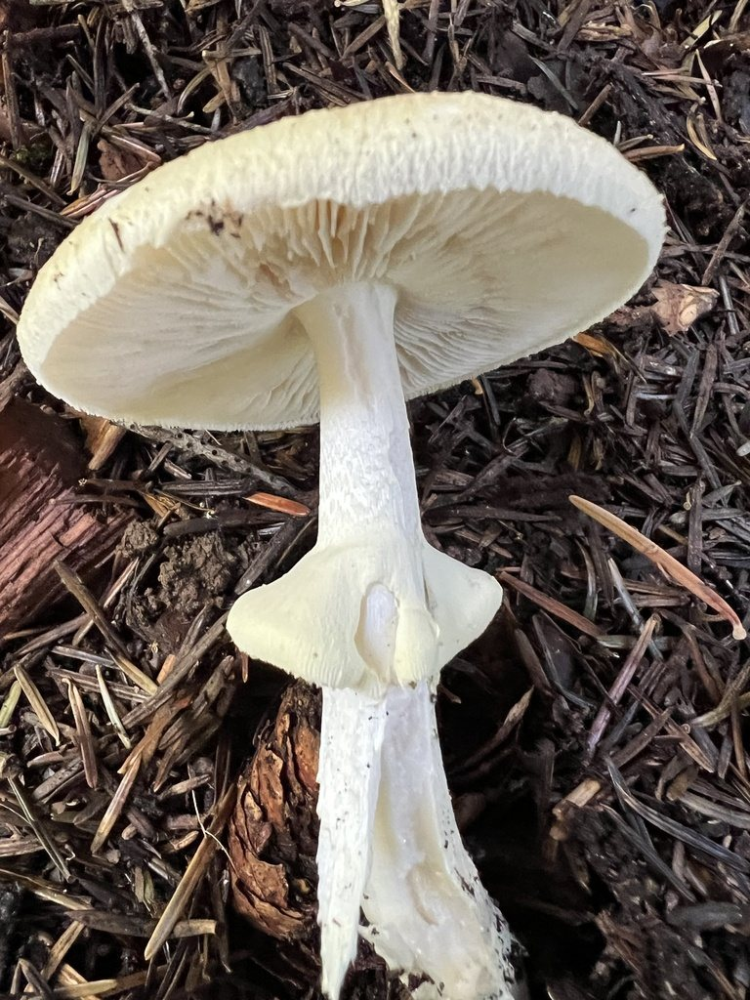

Mantarı fotoğrafla, riskini öğren
Üç açıdan çekin: şapkanın üstü, altı ve toprağı kazıyarak sap tabanı. Ölümcül türleri ayıran işaretler çoğu zaman sap tabanında gizlidir.

Şapka
Lameller
Sap
Halka
Torba
Bir fotoğraf yeterli; üç açı en güvenilir sonucu verir.
Sonuç hiçbir zaman "yenilebilir" değildir. Yeme kararı için uzman onayı gerekir.
Kastamonu mantarları
Küre Dağları, Ilgaz ve kıyı ormanlarında görülen türler; en tehlikeliden başlayarak.
Mevsim takvimi
Kastamonu ormanlarında hangi ay hangi mantarlar çıkar? Bir ay seçin. Görülme dönemi hava ve yağışa göre değişir.
Mantar yediyseniz belirti beklemeyin
Ölümcül türlerde belirtiler 6–24 saat, bazılarında günler sonra başlar ve bir süre "iyileşmiş gibi" hissettirebilir.
Belirti zamanlaması
Ne zaman yediğinizi ve belirtilerin ne zaman başladığını girin.
Ne yapmalı?
- Hemen 114'ü (Zehir Danışma) veya 112'yi arayın.
- Yenen mantardan örnek saklayın; pişmiş artık ve çöp de olur. Fotoğraflayıp hastaneye götürün.
- Ne zaman, ne kadar yendiğini ve kimlerin yediğini not edin.
- Aynı yemeği yiyen herkesi uyarın, belirtisi olmasa bile.
- Kendi kendinize kusturmaya, süt ya da ilaç vermeye çalışmayın.
- En yakın hastanenin acil servisine gidin; 112 sizi en uygun hastaneye yönlendirir.